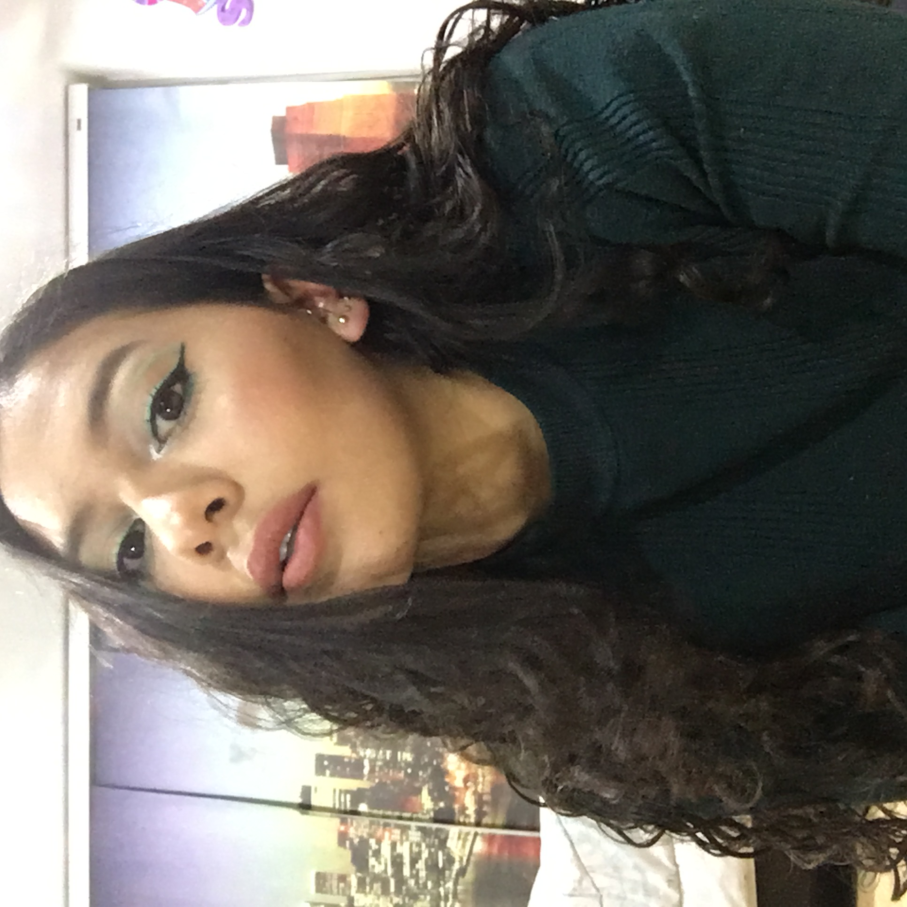
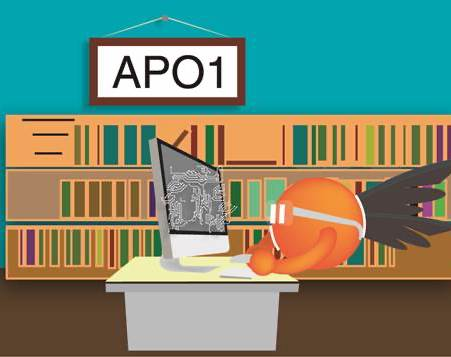
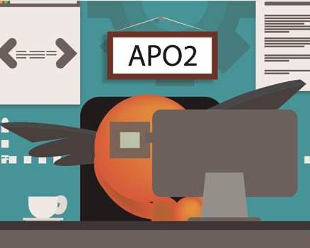

Hello everybody, I'm
Paula Sofía Vargas
I'm 20 years old and I'm a Systems and computing Engineering Student at Andes University. Since I was in 8th grade I was fully secure I was going to study Chemical Engineering. However, the degree in computer and systems engineering also caught my attention. On my first semester, I saw a programming class and I like it so much so I decided to star my second degree with Systems Engineering. On my fourth semester, I decided to continue only with systems enginering and I am so happy with my decision. Now I can't imagine my self as a Chemical engineer although I enjoy making thing like makeup, soaps, among others. I really like the Information Arquitecture field of the carreer even though I also like the development field.

Education
High school
Colegio Santa Clara (2005-2016)
University
Universidad de los Andes (2017-)
Experience
-

Teacher assistant
Universidad de los Andes (2019)
Teacher Assistant in Object-Oriented Programming and Algorithmic I
-

Teacher Assistant
Universidad de los Andes (2020)
Teacher Assistant in Object-Oriented Programming and Algorithmic II
-

Financial Data Manager
Latin Trade (August 2020-present)
Process optimization of Economic and Financial Reporting
My projects